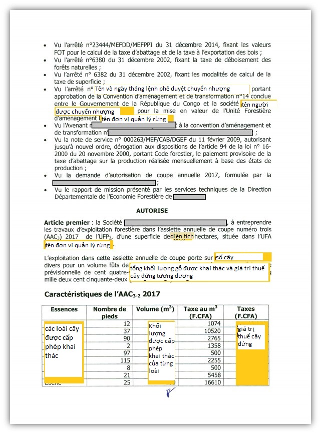
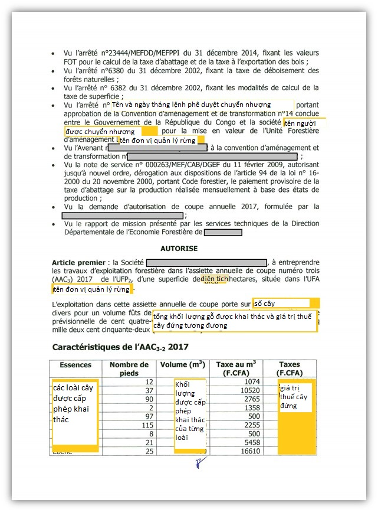
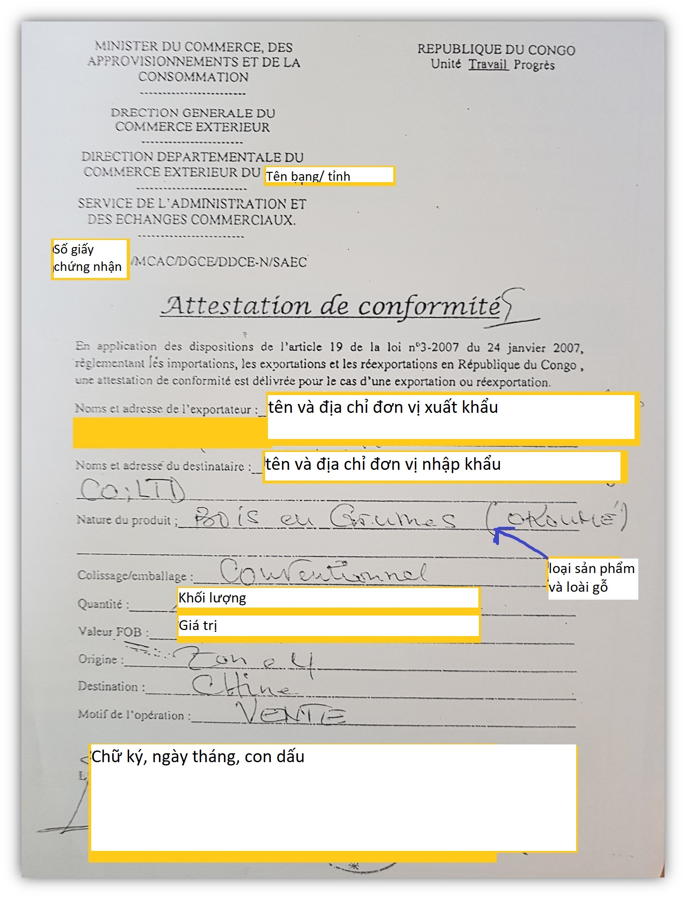

Implementing Timber Leglity Assurance Systems
A guide to comply with timber legality requirements in Cameroon and to support due diligence

CONGO
Congo’s Timber legality requirements
The Republic of Congo has signed a Voluntary Partnership Agreement with the European Union. The definition of legality and the tools used to ensure the legality of organizations and individuals in the forestry sector are set out in Annex II of the Agreement. It consists of two matrices: a matrix for assessing the legality of timber produced in natural forests, and a matrix for assessing the legality of timber from plantation forests. By being aware of the legal requirements in the Republic of Congo highlighted below, law enforcement agencies and importers can implement control measures to promote timber legally harvested, transported and traded. Importers and verification agencies can refer to or use this definition in implementing due diligence.
Suggestions for developing and implementing due diligence for importers
Due diligence and complexity

Developing due diligence systems
Implementing due diligence
The following documents are selected in accordance with Republic of Congo’s legal definition and/or legal requirements in different stages of the supply chain.
Logging and forest operations licence

Logging and forest operations licence is signed by the Minister of Forestry Economy (Ministère de l'Economie Forestière) and is issued to forest operation and logging companies. Check the company name on the license, field of activity, sign, stamp and date appropriately. (Original document name: Certificat d’agrément en tant qu’exploitant forestier)
Annual harvesting licence (Autorisation de coupe annuelle)
 


Annual harvesting licence is signed by the Director of the Provincial Forestry Economic Department under the Ministry of Forestry Economics, is issued to all license holders and concessionaires with limited timber reserves by species and harvested volume each year. Check the update of the harvesting license, the right owner of the license with the concession owner, the harvested area according to the management plan, the 5-year management program, the correct volume and species of transaction.
Approval of the concession contract (Ministerial Order)

The concession contract is signed and approved by the Minister of Forestry Economy for forest owners. Check this order has been published in the Official Gazette, the preferential term is 15-25 years. (Arrêté portant approbation de la Convention d’aménagement et de transformation ou Arrêté portant approbation de la Convention de transformation industrielle de l’unité forestière)
Technical specification of the concession contract (Cahier de charges particulier relatif à la Convention)
Technical specification of the concession contract is signed by the Minister of Forestry Economy and is issued to the companies. Check this document is signed, stamped, and obligations of the concession holder.
Minutes of the management plan validation meeting (Compte rendu de la réunion de validation du plan d’aménagement)
Minutes of the management plan validation meeting is signed by representatives of the Provincial Government and the Ministry of Forestry Economy. Check this document is signed and dated.
Management plan (Plan d’aménagement)
The management plan is kept by the Ministry of Forestry Economy and the company. Check the management plan is suitable for the approved sample, has preliminary studies (ecological, economic, social), consultation with the local community, confirmation from stakeholders.
5-year management programme (Plan de gestion quinquennal)
The 5-year management programme is kept by the Ministry of Forestry Economy and the company, signed by the Inter-Ministerial Committee. Check that the program has been approved by the competent authority, its contents are consistent with the management plan (harvesting area, main activities).
Approved environmental and social impact research report (Rapport d’étude d’impact environnemental et social)
Check the time of conducting the research, assure the report has been signed and stamped by the Minister of Environment, cross-check with the attached Environmental and Social Management Plan.
ADevelopment and Transformation Agreement (Convention d’aménagement et de transformation -CAT) or Industry Transformation Agreement (Convention de transformation industrielle - CTI)
The Development and Transformation Agreement (CAT) or the Industrial Transformation Agreement (CTI) is approved by an order from the Ministry of Forestry Economy for the forestry unit. Check signature, seal, effective date of the agreement.
Development plan (Plan d’Aménagement-PA)
The development plan of a Forest Management Unit (Unités Forestières d’Aménagement-UFA) / Forest Exploitation Unit (Unités Forestières d’exploitation-UFE) is approved by a Decree. Check the information, signature, seal, effective date of the development plan.
CITES permit
CITES permit is issued by the CITES Management Authority of the Ministry of Forestry Economy to loggers and exporters of timber. Check the signature and seal, the area, the type of forest on the logging permit, the quantity and specification of the harvested timber.
Receipts for payment of direct and indirect taxes due (Quittances de paiement des impôts directs et indirects dus)
Be sure to check taxes such as special corporate tax (Taxe spéciale sur les sociétés -TSS), corporation tax (Impôt sur les Sociétés-IS), and transferable property income tax (Impôt sur le Revenu des Valeurs Mobilières -IRVM) on tax receipts.
certificate of Conformity (l’attestation de conformité)
The certificate of conformity is signed, stamped and issued by the Department of Administration and Trade to the exporter. Check signature, seal, signing date, timber species, volume, value, destination on the certificate.
Certificate of origin (Certificat d’origine)
Certificate of origin signed by the Provincial Consular Section and issued to the timber exporter. Check signature, seal, product category, volume/weight, port of departure, port of destination.
Certificate of Export Verification (Attestation de vérification d’export)
Certificate of export verification is signed by the Director of the Forest Products Export Control Agency (Service de Contrôle des Produits Forestiers à l'Exportation-SCPFE), and issued to the exporter. Check signature, seal, issued date, product type, volume correct with reality.
Professional identity card (Carte d’identité professionnelle)
Check that the document is valid and signed and stamped by the Ministry of Forestry Economy. Also assure that the details contained in the certificate are appropriate for the processing operations.
Development and Transformation Agreement (CAT) or Industry Transformation Agreement (CTI)
The Development and Transformation Agreement (CAT) or the Industrial Transformation Agreement (CTI) is approved by an order from the Ministry of Forestry Economy for the forestry unit. Check signature, seal, effective date of the agreement.
Approved environmental and social impact research report
Check the time of conducting the research, assure the report has been signed and stamped by the Minister of Environment, cross-check with the attached Environmental and Social Management Plan.
Records of the establishment of the Occupational Safety and Health Committee
The records is in a standard Congolese templates provided by the Forestry Commission and signed by the Chairman and members of the Company's Occupational Safety and Health Committee. Check members, minutes, evidence of meetings of the Committee.
Register of employer
Importers can check the information of exporters and loggers on the Register of Employer about business name, address, processing and business fields.
Labor contract
The labor contract is drawn up by the company and signed by the employer and the employee. Check that the contract contents, information, signatures and seal are complete and accurate.